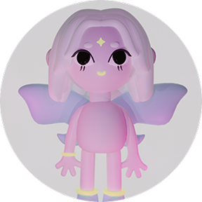

Мы предпочитаем создание комфортного рабочего процесса для обеих сторон. Открытый подход и объяснение хода работы поможет снизить тревогу и добиться желаемого результата в приятной атмосфере. Вы можете узнать, как это работает прямо тут!
1
Метафизика в дизайне — это университет проекта со своей историей, правилами, связями и эстетикой. Необходимо создать маленький мир вокруг идей. Почему? Это побуждает нас поступать в этот университет так, как если бы он
2
Метафизика в дизайне — это университет проекта со своей историей, правилами, связями и эстетикой. Необходимо создать маленький мир вокруг идей. Почему? Это побуждает нас поступать в этот университет так, как если бы он
3
Метафизика в дизайне — это университет проекта со своей историей, правилами, связями и эстетикой. Необходимо создать маленький мир вокруг идей. Почему? Это побуждает нас поступать в этот университет так, как если бы он

4
Метафизика в дизайне — это университет проекта со своей историей, правилами, связями и эстетикой. Необходимо создать маленький мир вокруг идей. Почему? Это побуждает нас поступать в этот университет так, как если бы он
5
Метафизика в дизайне — это университет проекта со своей историей, правилами, связями и эстетикой. Необходимо создать маленький мир вокруг идей. Почему? Это побуждает нас поступать в этот университет так, как если бы он